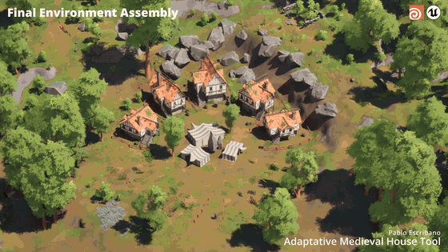

Houdini · Unreal Engine 5 · Procedural Generation
Adaptative Medieval House Tool
Herramienta procedural para generar edificios medievales adaptativos mediante sistemas interconectados, acelerando el worldbuilding sin perder control artístico.